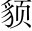

鄒忌齊人。修八尺有餘，而形同貌。昳迭。麗修，長也。昳，日側也。言有光豔。。朝服衣冠朝，晨也。服，著也。，窺鏡，謂其妻曰：「我孰與城北徐公美問法一。? 」其妻曰：「君美甚，徐公何能及君也答法一。! 」城北徐公，齊國之美麗者也插注一筆。妙。。忌不自信，而復問其妾曰：「吾孰與徐公美問法二。? 」妾曰：「徐公何能及君也答法二。! 」旦日，客從外來，與坐談，問之：「吾與徐公孰美問法三。? 」客曰：「徐公不若君之美也答法三。! 」明日，徐公來。熟視之，自以為不如；窺鏡而自視，又弗如遠甚作兩番寫。妙。。暮，寢而思之思妻、妾、客所以美我之故。○曰「朝」、曰「旦日」、曰「明日」、曰「暮」，敘次井然。，曰：「吾妻之美我者，私我也；妾之美我者，畏我也；客之美我者，欲有求於我也看破人情，便可因小悟大。。」
於是入朝見威王曰：「臣誠知不如徐公美，臣之妻私臣，臣之妾畏臣，臣之客欲有求於臣，皆以美於徐公現身說法，下即說到齊王身上，入情入理。。今齊地方千里，百二十城，宮婦左右，莫不私王；朝廷之臣，莫不畏王；四境之內，莫不有求於王。由此觀之，王之蔽甚矣情理固然，耐人深省。! 」王曰：「善。」乃下令：「群臣吏民，能面刺寡人之過者，受上賞；上書諫寡人者，受中賞；能謗議於市朝，聞寡人之耳者，受下賞下令之辭三疊應上。。」令初下，群臣進諫，門庭若市；數月之後，時時而間諫。進進諫者有暇隙。；期年之後，雖欲言，無可進者文亦三變。○齊王固自虛心，敘處似形容太過。。燕、趙、韓、魏聞之，皆朝於齊。此所謂戰勝於朝廷不待兵也。○結斷斬截。。
鄒忌將己之美、徐公之美，細細詳勘，正欲於此參出微理。千古臣諂、君蔽，興亡關頭，從閨房小語破之，快哉！